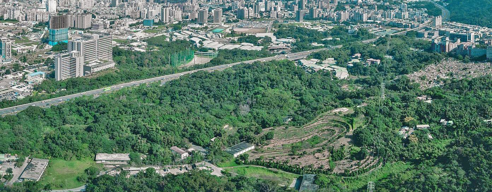
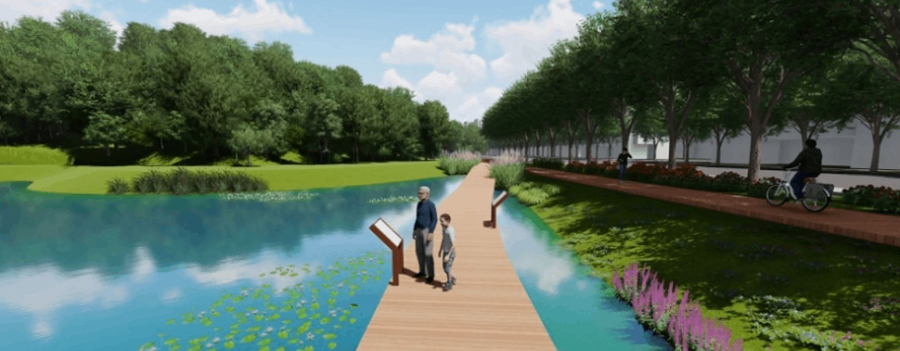
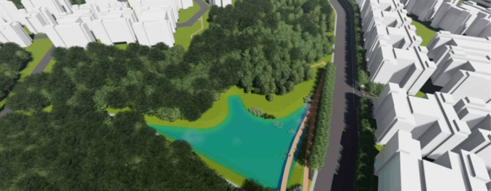
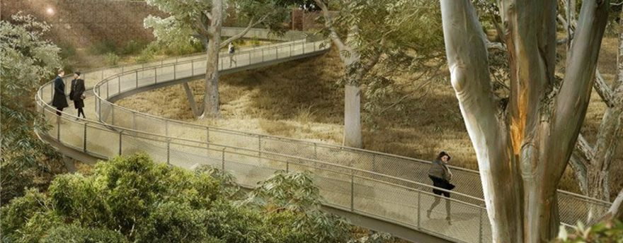

綠色 Green
透過綠廊建構及補綴，與公園、滯洪池及綠地空間加以整合串連；
貫徹透水保水設計，採用循環材料及保留部分既有地形及植栽，實踐綠色生態基盤理念。

韌性 Resilience
LID 低衝擊開發設計應用，全面採用透水工法及生態設計；
滯洪池結合景觀設施，形成優美之滯洪池公園。

循環 Circular
順應地形地勢，減少挖填土方數量並達成土方平衡之目標；
營建廢棄物回收再利用。

智慧 Smart
LED 路燈控制器、顯示螢幕、智慧監控、WiFi 熱點之智慧整合街燈；
滯洪水資源運作規劃，整合水資源防災效能。
Previous
Next
最新消息
閱讀更多
影音專區
您的瀏覽器不支援 HTML5 影片標籤，請升級或使用其他瀏覽器。